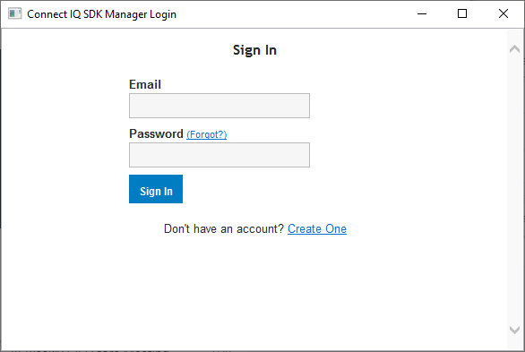

Getting Started

The Connect IQ SDK Manager
The Connect IQ SDK Manager application keeps your Connect IQ SDK and device library up to date. It will download SDK updates and new devices from the cloud as they become available.
Installing the Connect IQ SDK Manager
In the Install the SDK Manager section select Accept & Download
Create a new folder in a convenient location
Windows and Linux - Copy the executable and support files to the new folder1
Mac - Open the disk image and copy the SDK manager to the new folder
Launch the SDK Manager. You should see the following:

Press the Login button and enter the credentials of the Connect account:
The SDK Manager can remember your credentials or you can re-enter them every time. Select which option you prefer and press Next
You'll be presented with the option of having the Connect IQ SDK update automatically, or to be notified when a new version is available. Select the option you prefer and press Next
You'll be presented with the option of having Connect IQ devices update, or to be notified when new devices are available. If you want to update devices automatically, you can choose the types of devices you want updates for. Select the option you prefer and press Finish

The Monkey C Visual Studio Code Extension
The Monkey C extension adds support for using the Connect IQ SDK, including a syntax highlighting editor, build integration, and integrated debugger. The Monkey C extension requires Visual Studio Code, the Java JRE (version 1.8.0 or higher), and Connect IQ SDK version 4.0.6 or higher.
Installing the Monkey C Extension
In Visual Studio Code, go to the View > Extension
In the Extensions Marketplace, search box type "Monkey C"
Select the Monkey C extension from Garmin
Use the Install button to install the extension in Visual Studio Code. This will require a restart of Visual Studio Code.
After Visual Studio Code restarts, summon the command palette with Ctrl + Shift + P (Command + Shift + P on Mac)
Type "Verify Installation" and select Monkey C: Verify Installation
Generating a Developer Key
The Connect IQ compiler requires a developer key to sign apps when they're compiled and packaged. The required key must be a RSA 4096 bit private key.
Note: It's important you keep track of the key you use to sign app packages. You will need to use the same key to sign updates to an existing app on the store. If you lose your original signing key you will not be able to update your app.
Generating a Key Using the Monkey C Extension
If you have a developer key, you can set the path to it by selecting File > Preferences > Settings > Monkey C and setting the Monkey C: Developer Key Path to your developer key. If you do not have a developer key, you can generate one using the following steps:
Summon the command palette with Ctrl + Shift + P (Command + Shift + P on Mac)
Type "Generate a developer key" and select Monkey C: Generate a Developer Key
Select the directory in which to save your developer key
The developer key specified in the Connect IQ compiler preferences will automatically be passed to the compiler when a project is compiled.